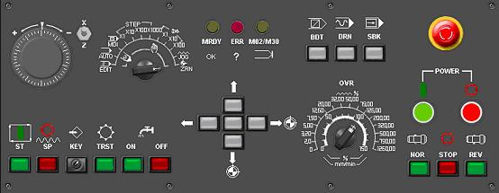
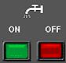
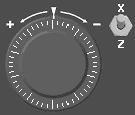
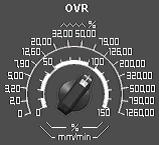
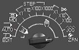
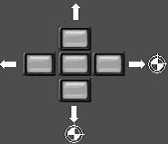

云南机床FANUC 0i Mate
返回<<<

程式启动按钮 程式停止按钮 程式输入保护开关
刀架旋转

冷却液开关按钮
机床准备完成 错误显示 程式结束显示
程式跳读选择 空运行 单步运行
主轴正转 主轴停 主轴反转

手轮

OVR(进给率调整)
紧停按钮 电源开关

EDIT（编辑）/AUTO（循环）/MDI（手动数据输入）/STEP（增量进给）/手轮倍率调整/JOG（手动）/ZRN（回参考点）

坐标轴选择及回参考点按钮选择